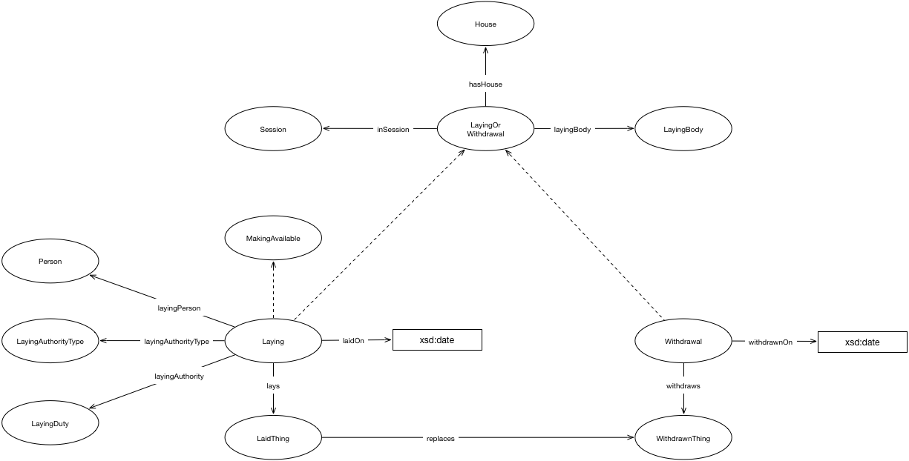

IRI: http://parliament.uk/ontologies/laying/House
IRI: http://parliament.uk/ontologies/laying/LaidPaper
IRI: http://parliament.uk/ontologies/laying/Laying
IRI: http://parliament.uk/ontologies/laying/LayingAuthority
IRI: http://parliament.uk/ontologies/laying/LayingBody
IRI: http://parliament.uk/ontologies/laying/LayingDuty
IRI: http://parliament.uk/ontologies/laying/LayingOrWithdrawal
IRI: http://parliament.uk/ontologies/laying/Person
IRI: http://parliament.uk/ontologies/laying/Session
IRI: http://parliament.uk/ontologies/laying/Withdrawal
IRI: http://parliament.uk/ontologies/laying/WithdrawnPaper
IRI: http://parliament.uk/ontologies/laying/hasHouse
IRI: http://parliament.uk/ontologies/laying/hasLayingAuthority
IRI: http://parliament.uk/ontologies/laying/hasLayingBody
IRI: http://parliament.uk/ontologies/laying/hasLayingDuty
IRI: http://parliament.uk/ontologies/laying/hasLayingPerson
IRI: http://parliament.uk/ontologies/laying/hasSession
IRI: http://parliament.uk/ontologies/laying/lays
IRI: http://parliament.uk/ontologies/laying/replaces
IRI: http://parliament.uk/ontologies/laying/withdraws
IRI: http://parliament.uk/ontologies/laying/laidOn
IRI: http://parliament.uk/ontologies/laying/withdrawnOn
This HTML document was obtained by processing the OWL ontology source code through LODE, Live OWL Documentation Environment, developed by Silvio Peroni.